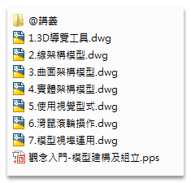
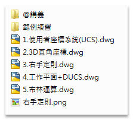
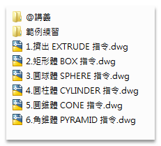
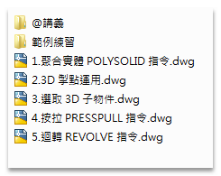
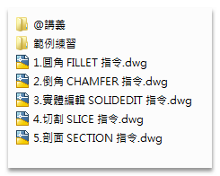
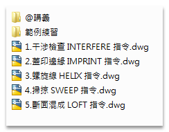
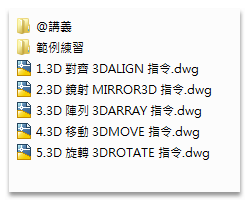
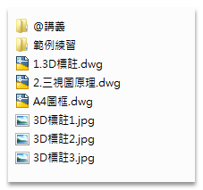
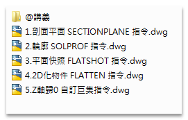
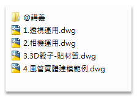

★注意：線上課程影片頻道綁定「GMAIL信箱」，透過電腦線上觀看影片時，必需要「登入GOOGLE帳戶」！
★加入線上課程 👉 https://autocad-tw.1shop.tw/fwmimx 👈
版本：AutoCAD 2010
影片：中文影音教學
規格：共計10堂(課程約700分鐘)
註1：附有DWG範例供操作練習，還有相關教學文件筆記。
註2：如遇播放問題，可改用「彈出式視窗」全螢幕觀看影片。
■AutoCAD 3D入門 第3堂：實體物件繪製(一)
■AutoCAD 3D入門 第4堂：實體物件繪製(二)
■AutoCAD 3D入門 第9堂：3D轉2D功能運用
第1堂：3D介面總覽

第2堂：UCS座標系統

第3堂：實體物件繪製(一)

第4堂：實體物件繪製(二)

第5堂：實體的編修(一)

第6堂：實體的編修(二)

第7堂：實體的編修(三)

第8堂：三視圖運用

第9堂：3D轉2D功能運用

第10堂：透視圖運用

https://www.autocad-tw.com/f72-forum
https://www.autocad-tw.com/t23024-topic
https://www.autocad-tw.com/t22774-topic